Ateliers Professionnels en SLAM
Site vitrine
Développement d'un site vitrine prenant exemple sur la SPA
AP SISR
Création d'un système en incluant des routeurs, des switchs, un serveur, et des postes
Site Web de collecte de déchets
Création d'un site web relié à une base de données
Site Web aéronautique
Création d'un site web dans l'aéronautique relié à une base de données
Application Web et mobile
Création d'une application mobile relié à un site web via une API
📋 Site Web de collecte de déchets
Contexte : La commune souhaite mettre en place un site web permettant aux résidents de s'inscrire à une collecte de déchets et aux gestionnaires de gérer les tournées. Le site doit être développé sans CMS, en utilisant PHP et MySQL, et sera hébergé sur un espace IONOS dédié.
Réalisations :
- Compte Client
- Compte administrateur
- Connexion / Inscription
- Formulaire d'inscription pour participer à une collecte
- Utilisation de base de données
- Déploiement grâce à IONOS et Filezilla
Compétences : BDD, IONOS, Filezilla, HTML/CSS/JS.
Trello :
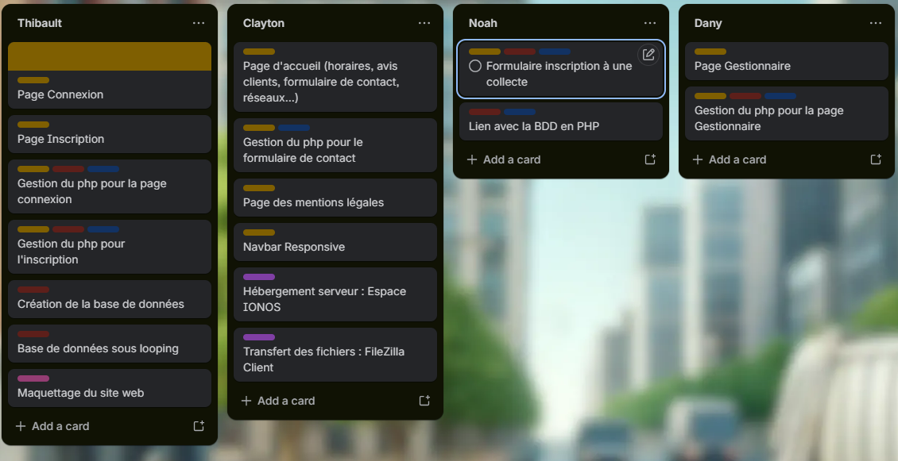
Diagramme de cas d'utilisation :

MCD du site web :
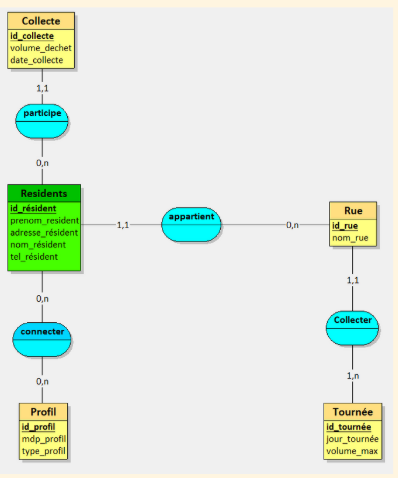
Schéma de navigation :
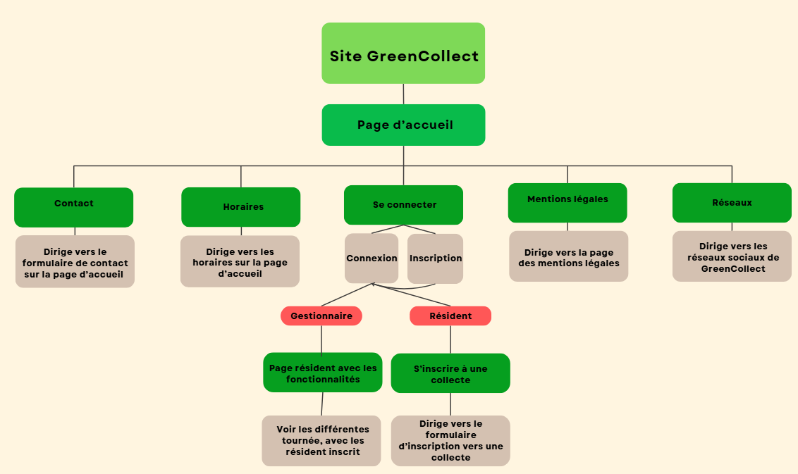
Rendu :
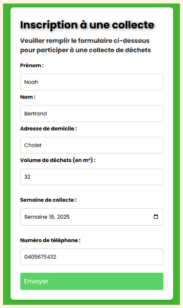
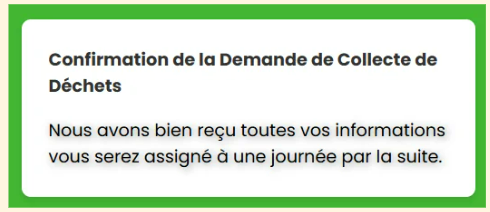
📋 Site Web aéronautique
Contexte : Dans le cas de la refonte du SI de Mudry Aviation, on vous a confié la mission de concevoir la base de données pour la nouvelle application. On souhaite une application en ligne, sécurisée. Le système doit donc être accessible depuis un navigateur. Vous disposerez d’un hébergement afin de publier votre site.
Réalisations :
- Page Nos Avions
- Page Nos Vols
- Page Nos Aéroport
- Page Nos Employés
Compétences : Utiliser une bdd et la relié au site web, savoir lire un MCD, programmation HTML/CSS/JS et PHP, créer un CRUD (Create, Read, Update, Delete).
Lien du site web : gr01.sio-cholet.fr Mot de passe : BMW1234*
Trello :
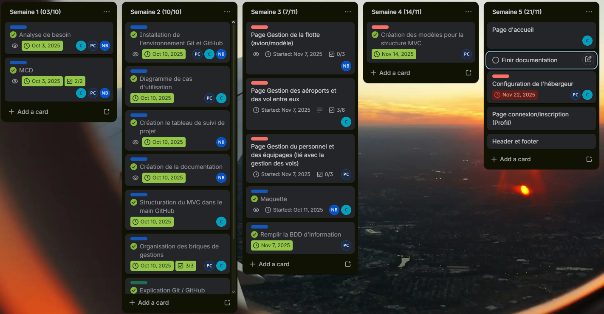
Diagramme de cas d'utilisation :

Suivi de projet :
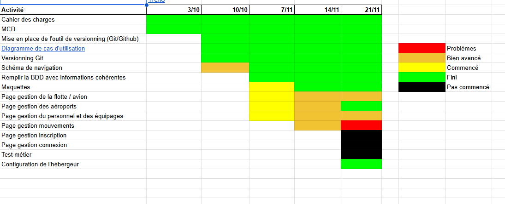
Rendu de la page Nos Avions :
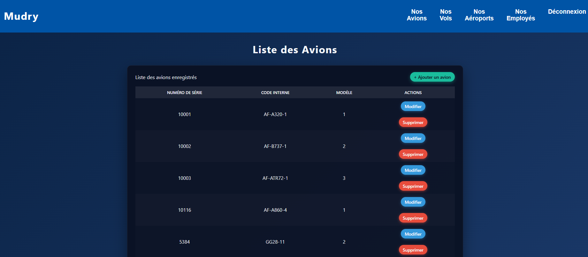
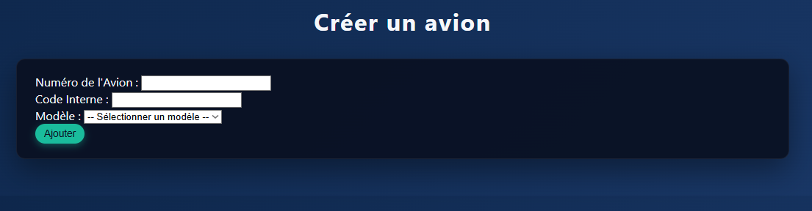
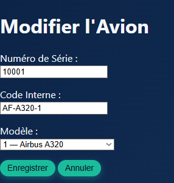
Rendu de la page Nos Modèles :
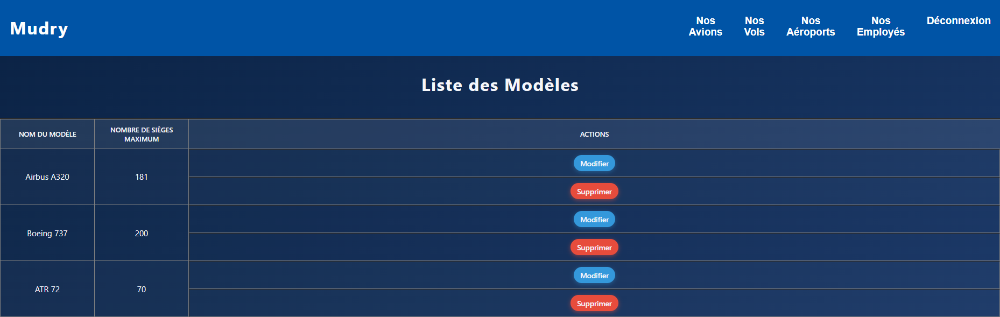
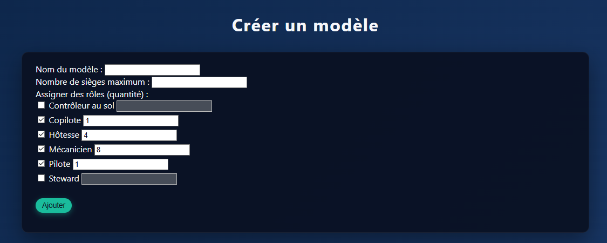
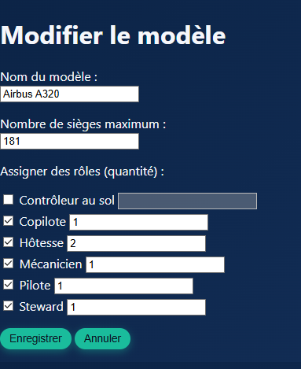
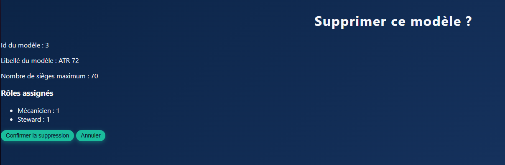
📋 Application Web et mobile
Contexte : Le concept est simple : une plateforme numérique d'échange entre des demandeurs qui viennent consommer un service ou un produit, et des offreurs qui viennent proposer leur produit ou service.
Réalisations :
- Compte Client : Application Android
- Compte Gestionnaire : Site Web
- Création d'une API
Compétences : Utiliser Symfony, Relier une API à une application Web et à une application Android, Utiliser Android Studio.
Suivi de projet :
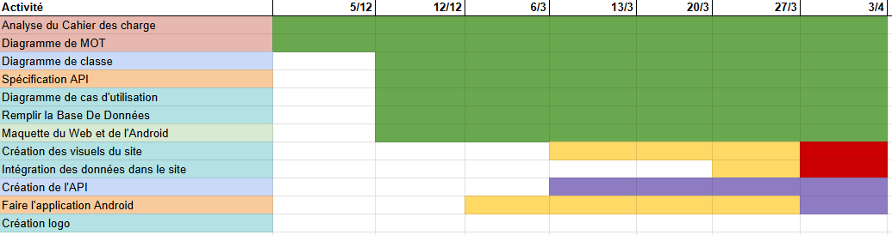
Diagramme de cas d'utilisation:

Diagramme de mot :
Voir le diagramme de motMCD :
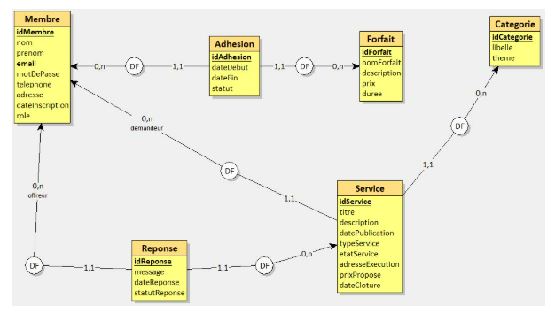
Rendu de l'application mobile :
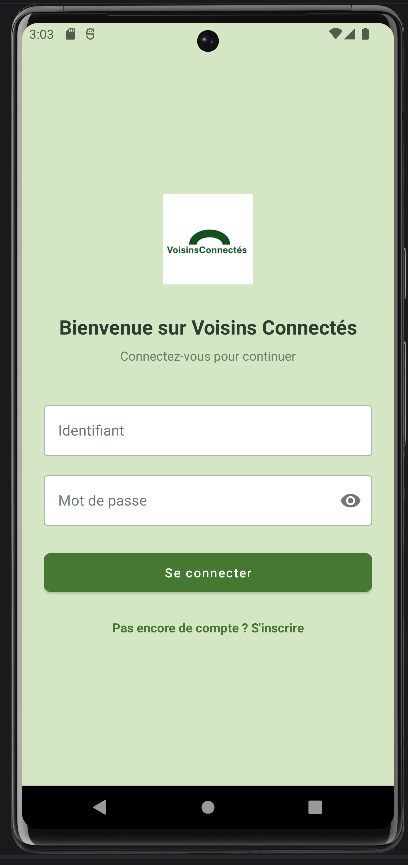
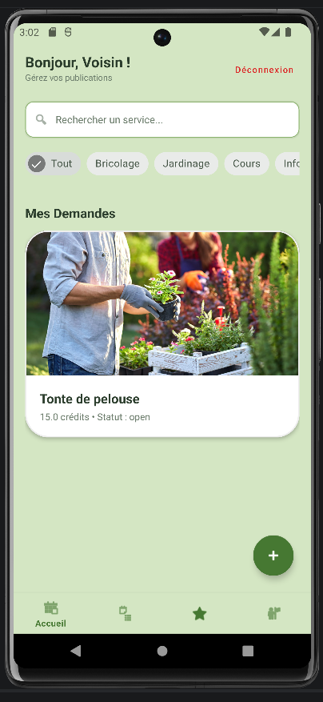
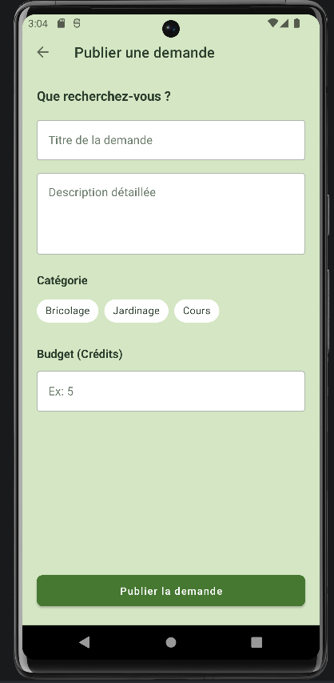
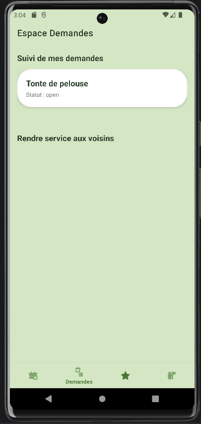
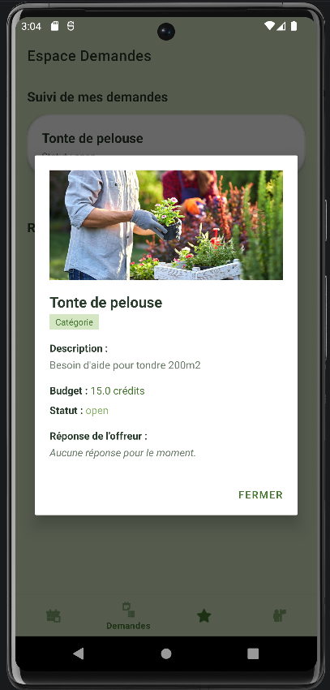
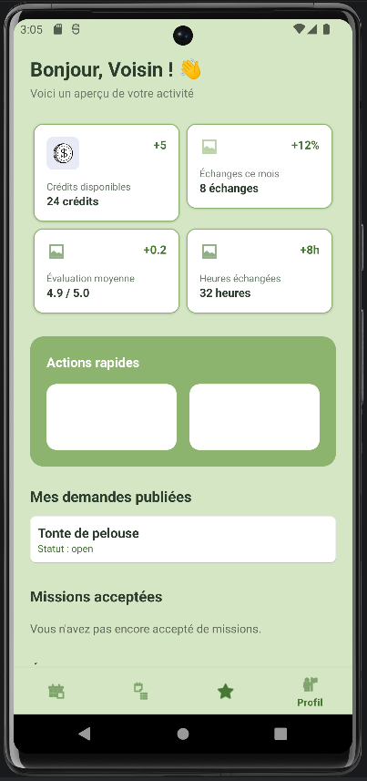